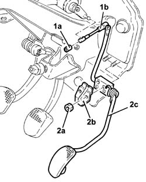
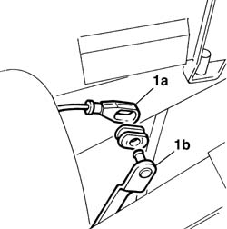
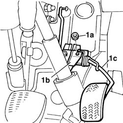
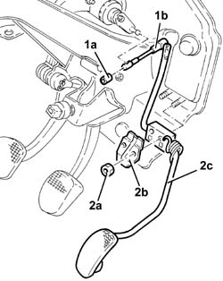

1068A14 accelerator pedal - r + r
- Path
- Procedures > 10 ENGINE > 1068 ACCELERATOR CONTROLS > 1068A accelerator pedal control > 1068A14 accelerator pedal - r + r
- Kind
- repair procedure (removal / refitting; the operation number is the code)
- Applies to
- engines: 1.6 TS , 1.8 TS, 2.5 V6, 1.9 JTD 8v , 2.4 JTD 10v; all production periods
- Interactive page
- https://sloeber94.github.io/elrnDB-a156/en/#/3237549
Applies to: engines: 2.5 V6; all production periods; only with equipment: Heater
 Removing
Removing
 Refitting
Refitting1. Withdraw clip (1a) and disconnect accelerator pedal link (1b) from the potentiometer.
2. Undo the nuts (2a), then move the bracket (2b) and accelerator pedal (2c).

Applies to: engines: 2.5 V6; all production periods; only with equipment: Heater
Refitting
RemovingFit the accelerator pedal separator and bracket, then fix them using the nuts.
Connect the accelerator pedal link to the potentiometer and secure with a retainer.
After refitting the accelerator pedal potentiometer, adjust it as described below.
Make sure that the ignition key is in the OFF position.
Connect the tool to the diagnostic socket and place the knob in position 3.
 | Name | Country |
|---|---|---|
- | MPX 97 switch | 1.806.365.000 |
Connect the Examiner diagnostic equipment.
Turn the ignition to the ON position.
Using the Examiner, enter the 'Parameters' environment.
Press 'Selection' and select the 'Accelerator position track 1' parameter.
Check that the potentiometer's calibration conform to the specified values:
- during idling (accelerator pedal released), 8% ± 1%
- fully open (accelerator pedal fully depressed), 64.3% ± 1%.
If the setting is not as specified, adjust the accelerator pedal travel by means of the accelerator pedal travel stop screw beneath the pedal.
Remove the diagnostic equipment.
Applies to: engines: 1.6 TS , 1.8 TS; all production periods
Removing
Refitting1. Withdraw the end of the accelerator cable (1a) from pedal lever (1b).

Applies to: engines: 1.6 TS , 1.8 TS; all production periods
1. Undo the nuts (1a), then move the bracket (1b) and accelerator pedal (1c).

Applies to: engines: 1.6 TS , 1.8 TS; all production periods
Refitting
RemovingFit the accelerator pedal and bracket, then fix using the nuts.
Connect the accelerator pedal lever to the end of the cable.
Adjust the accelerator control cable, ref. to op. 1068A30 accelerator control cable - r + r .
Applies to: engines: 1.9 JTD 8v , 2.4 JTD 10v; all production periods
Removing
Refitting1. Withdraw clip (1a) and disconnect accelerator pedal link (1b) from the potentiometer.
2. Undo the nuts (2a), then move the bracket (2b) and accelerator pedal (2c).

Applies to: engines: 1.9 JTD 8v , 2.4 JTD 10v; all production periods
Refitting
RemovingFit the accelerator pedal and bracket, then fix using the nuts.
Connect the accelerator pedal link to the potentiometer and secure with a retainer.
Connect Examiner and check the throttle valve calibration parameters. If the values are not within recommended limits, regulate the accelerator pedal travel adjustment bolt found under the pedal itself.